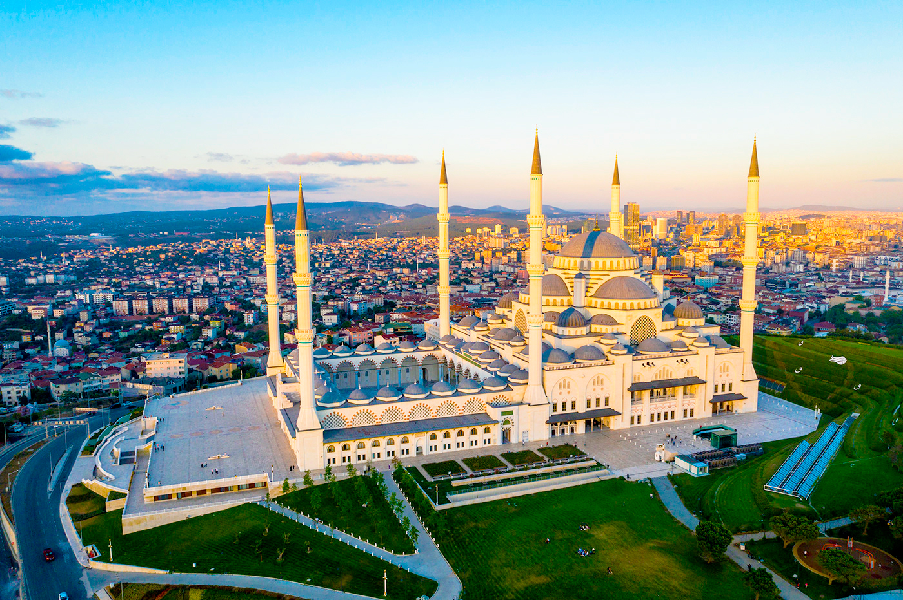
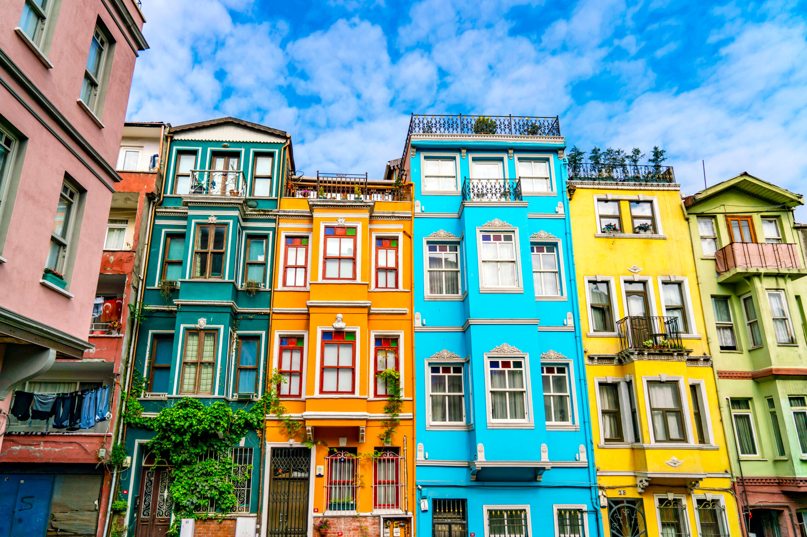
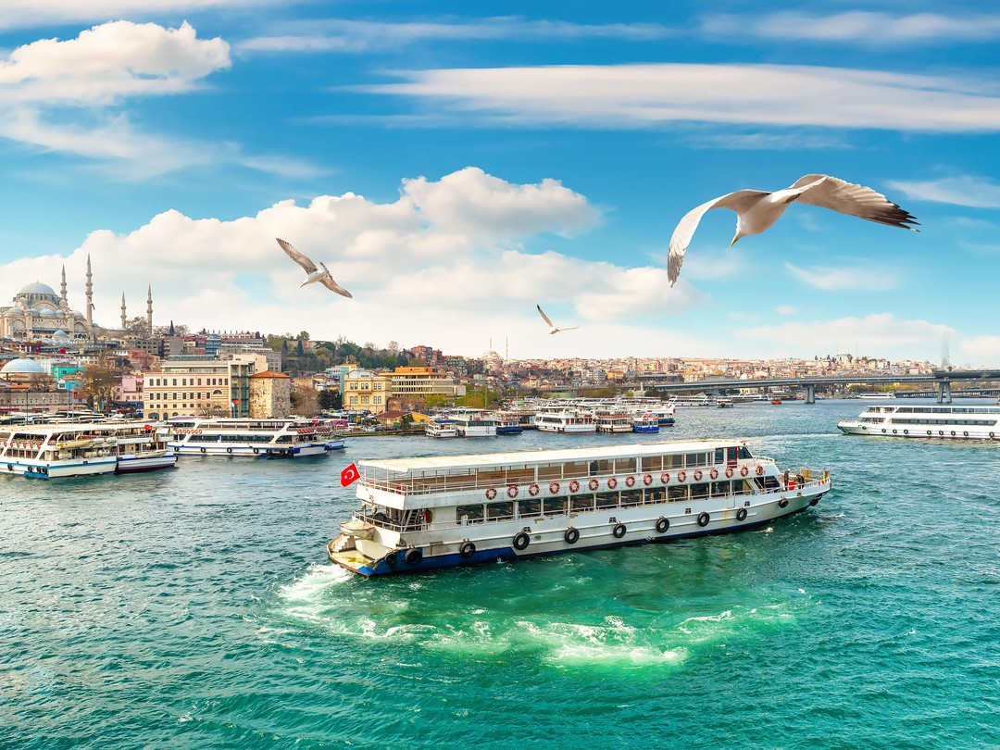
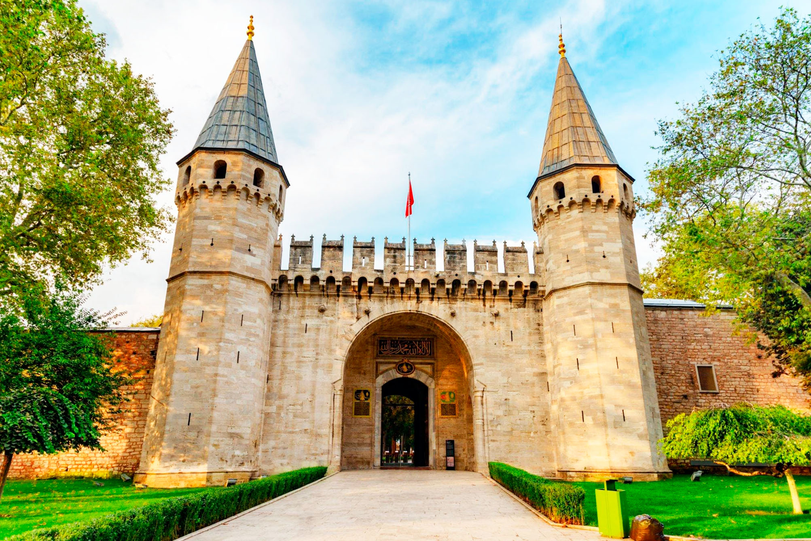
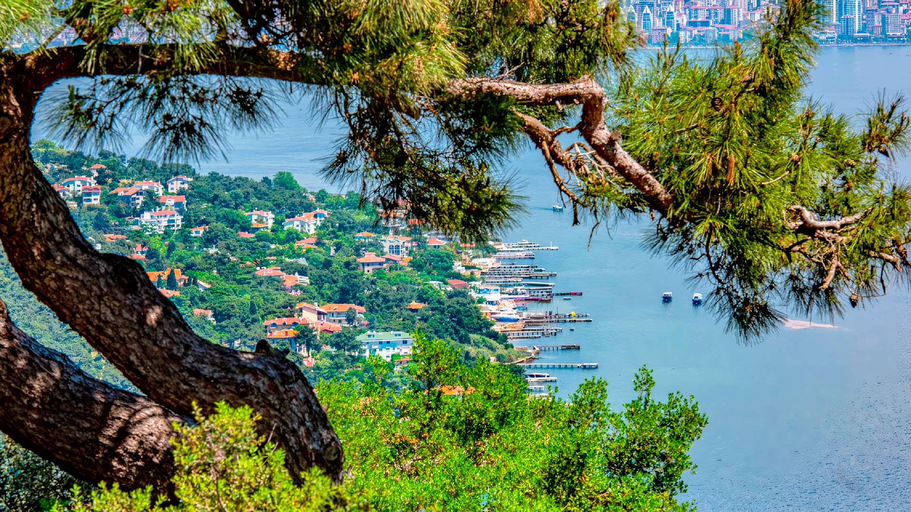
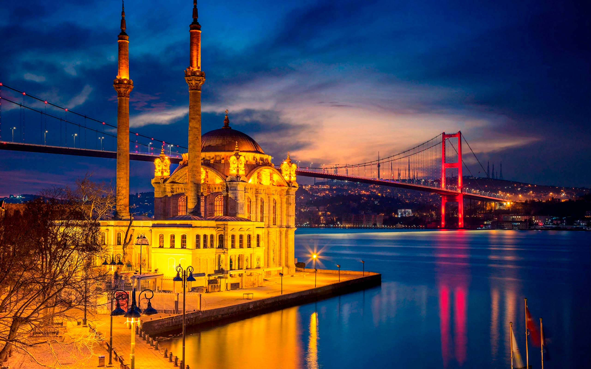

Щоб відкрити тобі свій унікальний шарм. У якому Європа та Азія переплелися в чудовій історії!
Поринь у традицію усієї країни, відвідавши величну мечеть Чамлиджа і розкішний палац Топкапи – справжні
символи славетної епохи.
Дозволь собі зачаруватися круїзом по Босфору, насолоджуючись захопливим видом палаців і фортець, що
творили історію цього міста.
Відкрий для себе Принцеві острови – оазу тиші та елегантності, де колись жила й відпочивала османська
знать.
Стамбул запрошує отримати незабутні емоції від історії, культури і казкових краєвидів!
ДЕТАЛІ ТУРУ
Місце відправлення та повернення: Одеса
Час відправлення: 10:00
Час прибуття в Одесу: Орієнтовно 18:00
У вартість входить:
- Проїзд у обидві сторони автобусом турист-класу
- Проживання 3 ночі у готелі
- Сніданок
- Медична страхівка
- Керівник групи
- Ліцензований місцевий гід
- Відвідування туристичних об’єктів, зазначених у програмі
- Багаж у салон до 8 кг
- Багаж основний до 15 кг (55 × 40 × 23 см)
Що взяти з собою?
- Гроші на додаткові витрати (їжа, напої, додаткові екскурсії, сувеніри, подарунки,
особисті
витрати тощо)
- Зручне взуття
У вартість не входить:
- Вхідні квитки у музеї і туристичні об’єкти
- Круїз по Босфору – 20 €
- Мечеть Чамлиджа + Площа Таксим + Фенер-Балат (пішохідна прогулянка) – 45 €
- Палац Топкапи + Гарем султана – 65 €
- Круїз по Мармуровому морю до Принцевих островів (Бююкада) – 60 €
- Турецька ніч – 40 €
- Босфор вночі – 60 €
- Акваріум Стамбула – 50 €
- Оренда навушників – 5 € за 3 дні
Додаткові послуги:
- Додаткове місце в транспорті – 75 €
- Для пенсіонерів віком понад 66 років медична страхівка оплачується додатково
ПРОГРАМА:
Субота:
10:00 – Відправлення з Одеси
Неділя
Прибуття у Стамбул та початок екскурсійної програми:
- 🍬 Магазин солодощів Ali Baba – рай турецьких ласощів! Понад 4000 видів традиційних
десертів
точно здивують вас! Насолоджуйтеся витонченим смаком ніжної халви, неповторною солодкістю
знаменитого лукуму, повітряною пішманіє, ароматним медом і ніжною тахіні. Кожен смаколик –
це
подорож у кулінарні традиції Туреччини, вибух східних ароматів, ідеальний спосіб побавити
себе
або привезти солодкий сувенір додому!
- 👜 Магазин шкіри та хутра – елегантність і витонченість! Якщо ви цінуєте розкіш і
якість,
це
місце стане вашою ідеальною знахідкою! Огляньте ексклюзивну колекцію курток, сумок і
аксесуарів,
створених майстрами своєї справи. Кожен виріб поєднує традиції та сучасний дизайн, створюючи
унікальний стиль. Насолоджуйтеся красою деталей і їх справжністю!
- 🕌 Мечеть Сулейманія – символ величі Османської імперії. Розташована на одному з
найвищих
пагорбів Стамбула, мечеть Сулейманія вражає своєю величною архітектурою та захопливою
панорамою
міста. Побудована у XVI столітті, возвеличувала постать султана Сулеймана Пишного. Спокійна
атмосфера, грандіозні інтер'єри та чудові сади роблять її не лише місцем поклоніння, а й
острівцем тиші й історії в самому серці жвавого Стамбула.
- 🏨 Заселення у готель – відпочинок після насиченого дня! Згідно з місцевими
правилами,
автобус
зупиниться на відстані 300–600 метрів від готелю. Разом із керівником групи ви заберете
багаж і
підете на рецепцію для оформлення поселення. Після поселення можна відпочити в номері перед
новими пригодами в Стамбулі!
- 🌍 Досліджуйте азійський Стамбул і історичні квартали! Ми відвідаємо величну мечеть
Чамлиджа –
найбільшу в Туреччині, символ духовності й архітектурної досконалості. Потім повернемось до
центру міста, де поринемо в атмосферу жвавої площі Таксим. На завершення – прогулянка
мальовничими кварталами Фенер-Балат: вузькі мощені вулички, яскраві будинки й неповторний
шарм
стамбульського минулого. Незабутній досвід!


Понеділок
Сніданок у готелі. Пішохідна екскурсія історичним центром Стамбула.
- Ми побачимо красу та історію міста, починаючи з Блакитної мечеті (Султанахмет Джамі),
одного з
найвражаючих архітектурних шедеврів, відомого своїми грандіозними склепіннями. Далі
відкриємо
для себе Обеліск Феодосія — стародавній пам’ятник, привезений з Єгипту, символ
імперської
величі. Також зупинимося біля Німецького фонтану — елегантного подарунка імператора
Вільгельма
II, місця, наповненого історією, перед тим як продовжити нашу пригоду в Стамбулі!
- 👑 Палац Топкапи – колишня резиденція османських султанів, цей величний палац XV
століття
нині є
музеєм, який зберігає безцінні скарби. Захоплива подорож у життя знаті Османської імперії,
де
сади, оздоблені зали й історичні реліквії перенесуть вас у минуле. (У вартість екскурсії
входить: проїзд, місцевий гід, супровід групи).
- 🚢 Круїз по Босфору – Насолоджуйтеся чарівною прогулянкою протокою, яка розділяє
Європу й
Азію!
Ви побачите розкішні палаци, величні фортеці та затоку Золотий Ріг. Побачите Стамбула з
кораблика. (У вартість екскурсії входить: круїз, місцевий гід, керівник групи).
- 🎶 Турецька ніч у ресторані Gar – Завершіть день автентично, смакуючи традиційну
вечерю
під
супровід музики та східних танцювальних шоу. Яскрава атмосфера, смачні страви й турецька
гостинність зроблять цей вечір незабутнім! (У вартість входить: вечеря та розважальна
програма).


Вівторок
Сніданок у готелі.
- 🚢 Круїз по Мармуровому морю до Принцевих островів (Бююкада). Вирушаємо в незабутню
екскурсію на
Бююкаду – найбільший із Принцевих островів. Подорож човном триватиме близько півтори години.
Прибувши на острів, ми піднімемося автобусом на пагорб, звідки відкривається захоплива
панорама
Стамбула – ідеальне місце для незабутніх фото! Ми відвідаємо монастир Святого Георгія –
місце,
наповнене історією та духовністю, а також насолодимося традиційним турецьким обідом у
місцевому
кафе.
- 🌙 Босфор вночі – Стамбул у світлі місяця. Мрійте з відкритими очима, вирушивши в
круїз
по
Босфору вночі – магічну подорож протокою, яка з’єднує два континенти. З настанням темряви
Стамбул оживає, виблискуючи вогнями, що відбиваються в спокійних водах Босфору. Ви побачите
величні палаци, історичні фортеці та знамениті мости – все це в романтичній і чарівній
атмосфері. Незабутнє враження, ідеальне, щоб закохатися в нічну красу міста. (У вартість
екскурсії входить: транспорт, квитки на човен, тур по острову, обід і безалкогольний напій).


Середа
Сніданок у готелі та виселення з номерів.
- 🐟 Стамбульський акваріум – Незабутній підводний світ. Стамбульський акваріум варто
побачити!
Неймовірний тематичний комплекс довжиною 1,2 км, який здійснить подорож від тропічних лісів
до
морських глибин. Тут ви побачите понад 1500 видів і 17 000 тварин, зокрема акул, пінгвінів і
капібар – справжня пригода для всіх любителів природи та чудове місце для всієї родини.
- 🛍️ Великий Базар (Kapalı Çarşı) – Магія місцевих закупів. Хто хоче сповна відчути
атмосферу
Стамбулу. Великий Базар – це не просто шопінг-тур, це культура, вироби власноруч,
споглядання
мистецтва. Це один з найбільших ринків світу. Тут є все – прикраси, спеції, смаколики, одяг.
Додаткові послуги
- Додаткове місце в транспорті (75.0 €)
- Гід іноземною мовою (300.0 €)
- Для осіб похилого віку > 65 років медична страхівка оплачується додатково (12.0 €)
- Наднормовий багаж оплачується додатково (25.0 €)
Додаткові витрати (за бажанням):
- Круїз по Босфору – 20 €
- Мечеть Чамлиджа + Площа Таксим + Фенер-Балат (пішохідна прогулянка) – 45 €
- Палац Топкапи + Гарем Султана – 65 €
- Круїз по Мармуровому морю до Принцевих островів (Бююкада) – 60 €
- Турецька ніч – 40 €
- Босфор вночі – 60 €
- Стамбульський акваріум – 50 €
- Оренда навушників – 5 € за 3 дні
УВАГА!!! Програма туру може бути змінена без попереднього
повідомлення залежно
від погодних умов, часу прибуття у Стамбул, непередбачених заторів у місті та інших факторів.